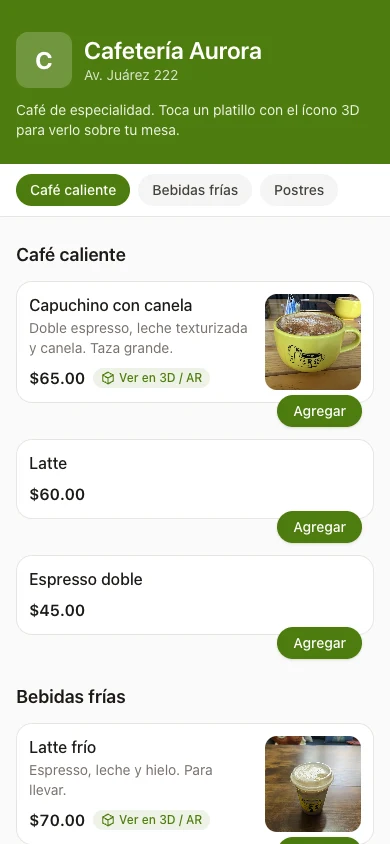
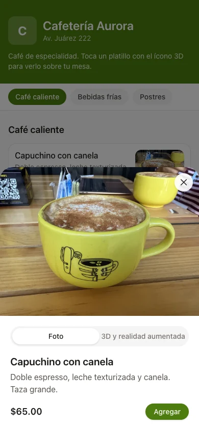
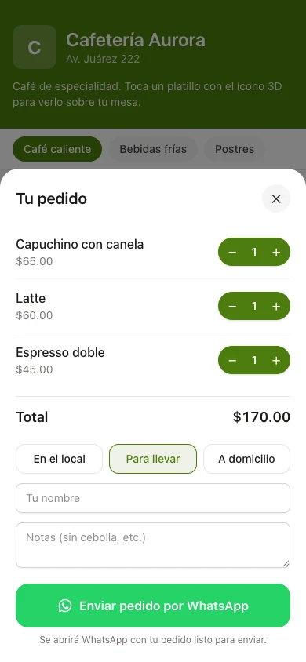
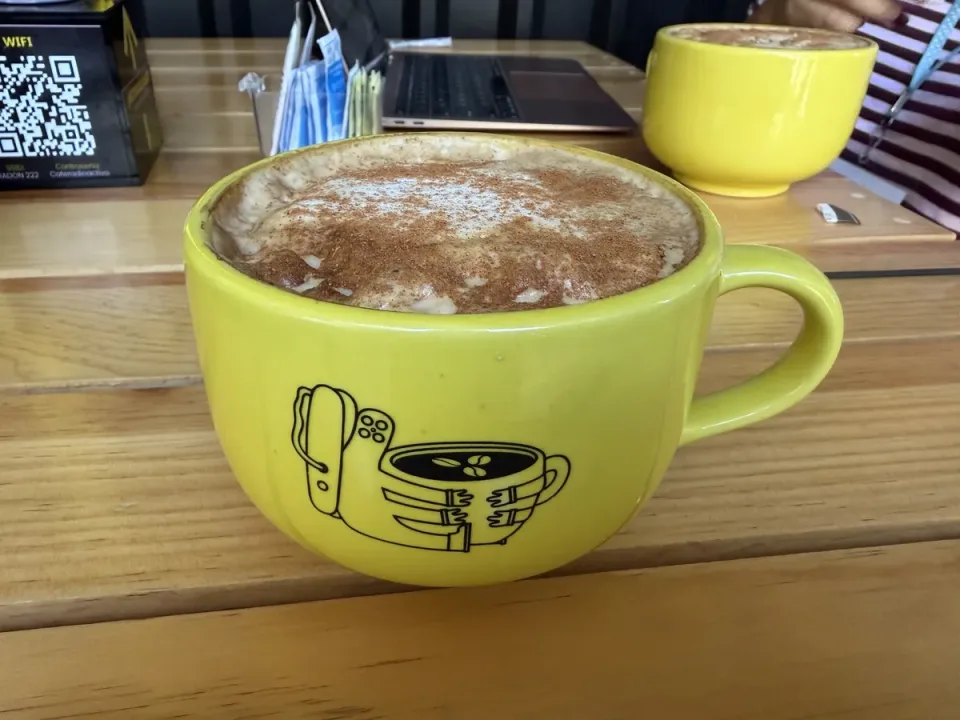
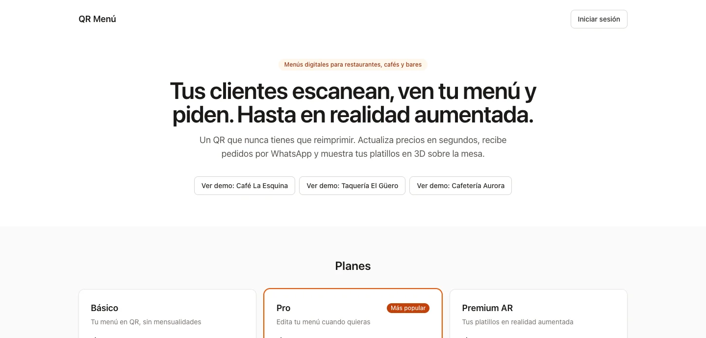

Realidad aumentada desde el navegador
Un lanzador propio detecta el dispositivo: AR Quick Look con USDZ en iOS y Scene Viewer con GLB en Android. Si el teléfono no soporta AR, el pedido en curso se conserva.
En desarrollo
Menú digital para restaurantes: el comensal escanea, pide por WhatsApp y ve el platillo en 3D sobre su mesa.



El menú impreso no muestra el platillo, hay que reimprimirlo con cada cambio de precio y no dice qué consulta más la gente.
Un QR que nunca se reimprime lleva a un menú editable, con pedidos por WhatsApp, estadísticas y platillos en realidad aumentada creados a partir de fotos.
Este es el mismo modelo que ve el comensal en el menú de demostración. Cárgalo y gíralo; desde un celular puedes ponerlo sobre tu mesa.

Tres pasos del lado del restaurante, dos del lado del comensal.
Categorías, platillos, fotos y precios desde su panel. En el plan básico lo captura el administrador.
Uno por negocio o por mesa, en PNG o SVG, listos para imprimir una sola vez.
Con su altura real en centímetros. Un worker genera el modelo 3D y una persona lo revisa antes de publicarlo.
Sin cuenta ni aplicación: navega categorías, abre el platillo y alterna entre foto y 3D.
Arma su pedido y lo envía por WhatsApp. En AR, el platillo aparece frente a él a tamaño real.
Un lanzador propio detecta el dispositivo: AR Quick Look con USDZ en iOS y Scene Viewer con GLB en Android. Si el teléfono no soporta AR, el pedido en curso se conserva.
Recorte del fondo, generación con el motor elegido (IA generativa en nube, modelo local o fotogrametría) y acabado automático en Blender.
Carrito para comer en el local, para llevar o a domicilio, que abre WhatsApp con el pedido ya redactado.
Editor de menú según plan, descarga de QR, estadísticas de escaneos y vistas, y solicitudes de cambio.
Prospectos, clientes, pagos, ingreso recurrente y cola de trabajos 3D para aprobar, rechazar o reintentar con otro motor.
Cinco tipos de evento: escaneo, vista de menú, vista de platillo, apertura de AR y pedido por WhatsApp.
Tres planes con funciones controladas desde un solo punto del código, y ciclo de cuenta activa, gracia, solo lectura y suspendida.

La web atiende a restaurantes y comensales. La generación 3D corre aparte y se comunica solo por HTTP.
Next.js 15 con App Router, React 19, Server Components y Server Actions. Tailwind 4.
Prisma con 11 modelos sobre SQLite, con PostgreSQL en la ruta. Imágenes convertidas a WebP.
Proceso en una Mac que toma trabajos de la cola, genera GLB y USDZ y reporta costo y tiempo.
model-viewer cargado solo al abrir la pestaña 3D, más AR Quick Look y Scene Viewer.
Pensadas para que el restaurante no tenga que entender nada de esto.
Codifica un enlace corto propio que registra el escaneo y redirige. El restaurante cambia de plan o de menú sin reimprimir.
Se comunica por HTTP con un token. Si está apagado, la web sigue funcionando y los trabajos esperan en la cola.
Bloqueo optimista al reclamar trabajos, y los que llevan más de dos horas procesando se vuelven a repartir.
Ningún modelo llega al menú sin aprobación, y puede reintentarse con otro motor si el resultado no convence.
Cookie httpOnly, solo el hash del token en base de datos, contraseñas con scrypt y límite de intentos de acceso.
El recorrido completo ya funciona en local. Falta llevarlo a producción.
Es un proyecto privado. Escríbeme y agendamos una demostración.